← Film
04 / 07
Game Three
Game 3 of the NBA Finals, lived from the street: barricades and police lines, jerseys and phones held high, sidewalk watch parties, and the train home.
-
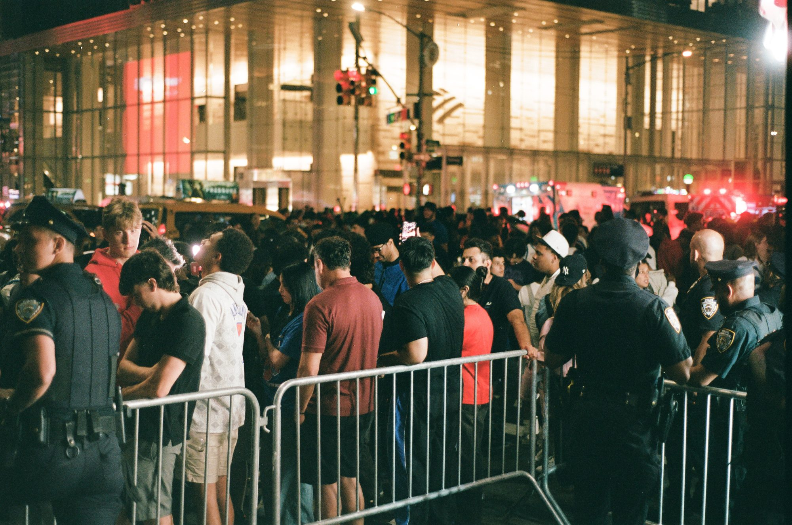
01 / 12 -
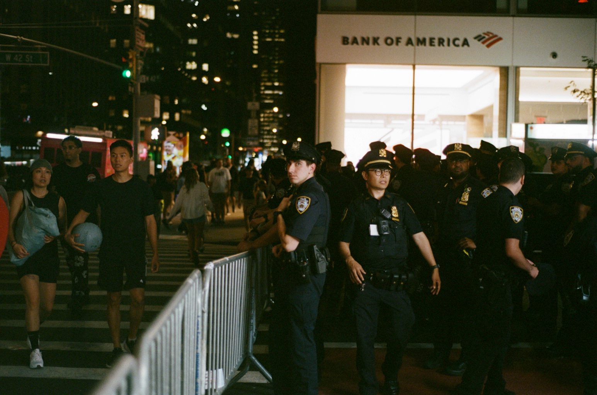
02 / 12 -
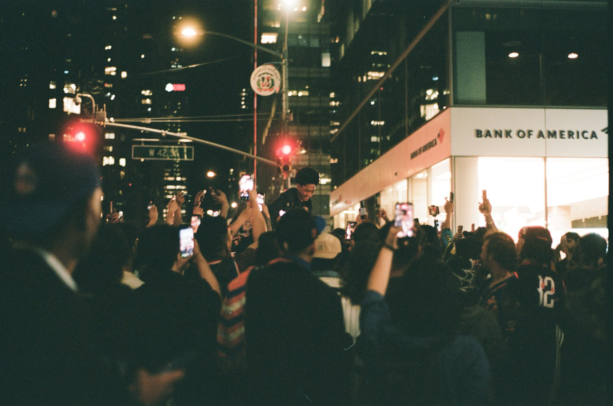
03 / 12 -
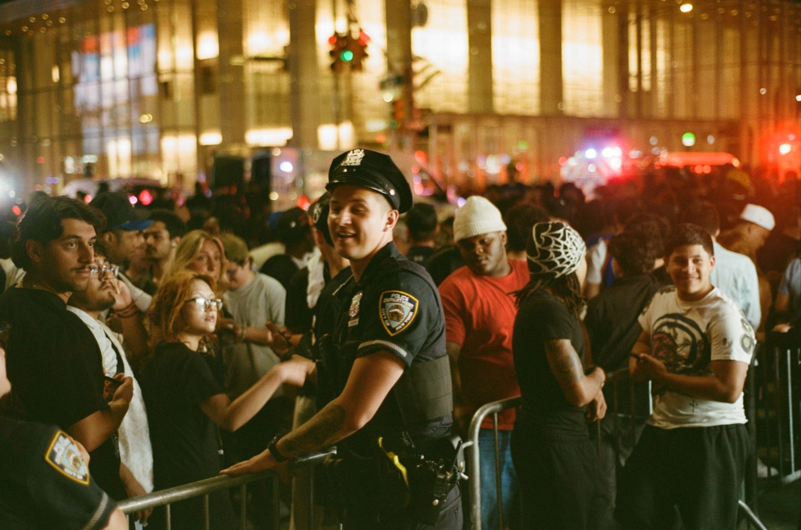
04 / 12 -
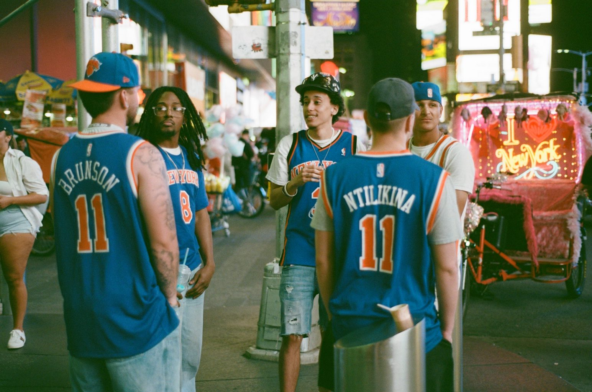
05 / 12 -
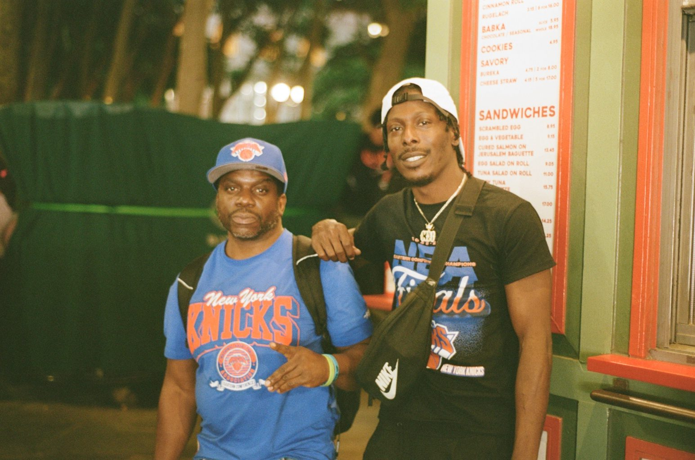
06 / 12 -
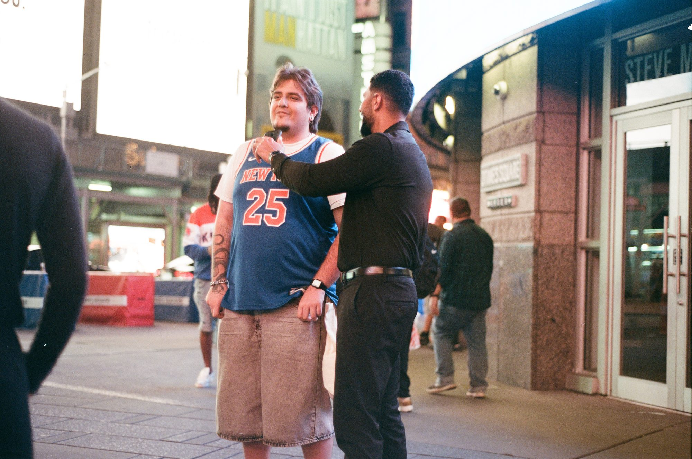
07 / 12 -
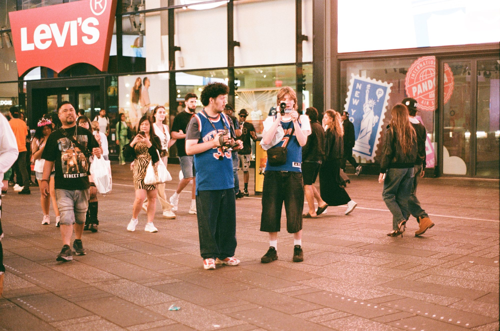
08 / 12 -
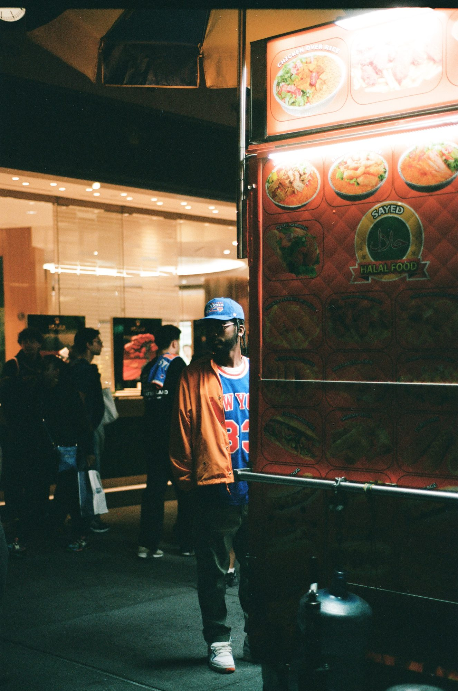
09 / 12 -
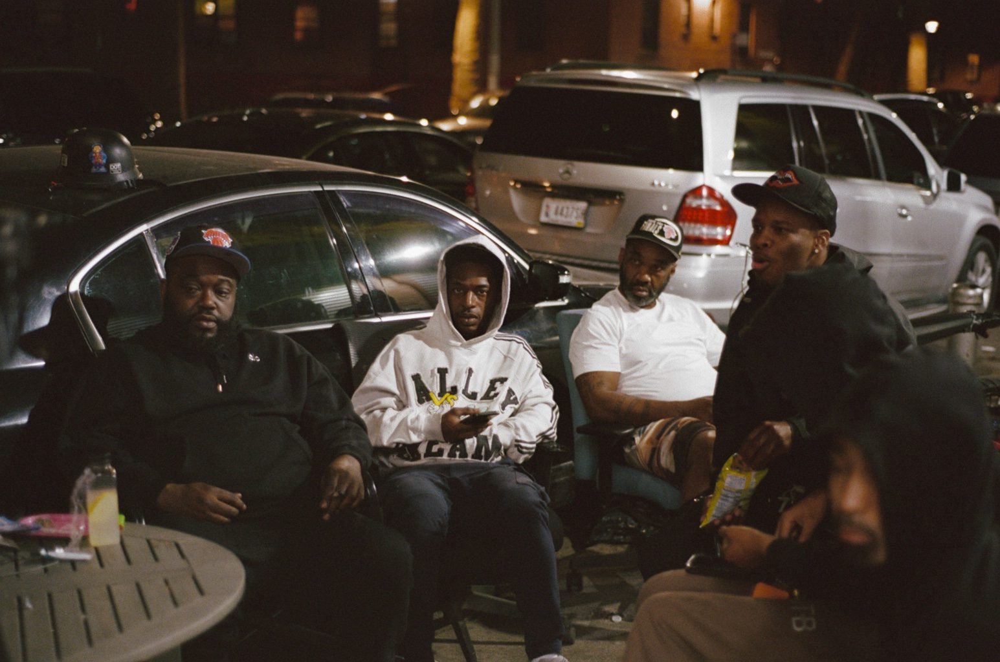
10 / 12 -
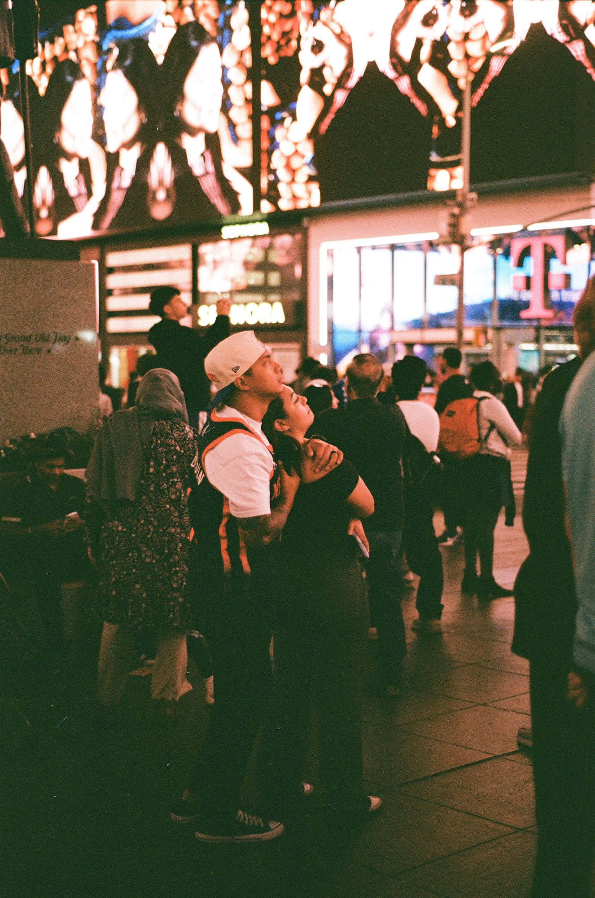
11 / 12 -
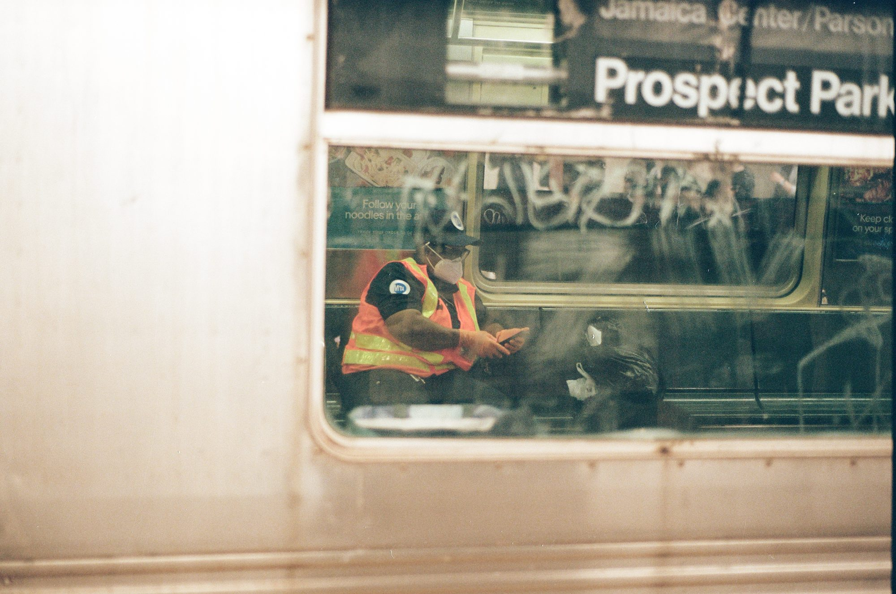
12 / 12